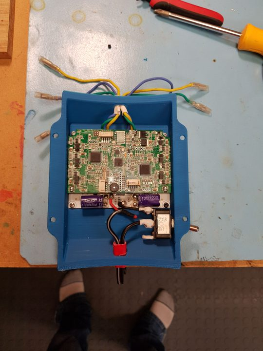
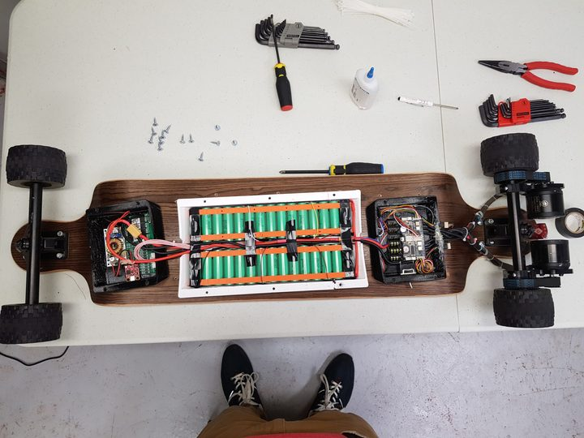
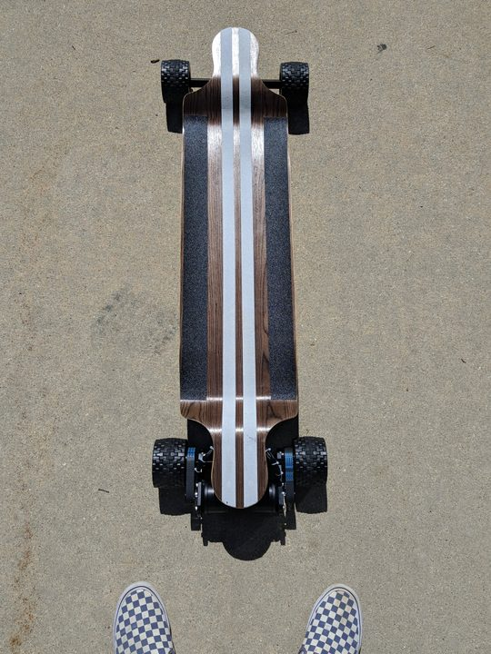
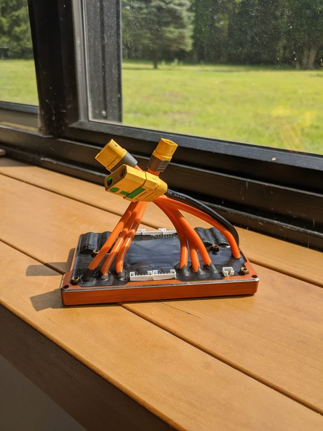

2016 – 2021 PCB
Electric Longboards
Three generations of DIY electric longboards: printed-mount prototypes, a 39 mph personal board with a pack I spot-welded myself, and a commissioned 12S4P build.
- VESC
- Spot-welded Li-ion packs
- BMS
- BLDC drive
- 3D-printed enclosures
- Commissioned build

The goal was a 3D-printable kit that turns a normal longboard into a powerful electric vehicle for getting around a college campus. High-end commercial boards cost $1,500–3,000; I aimed for about $500.
First board: prototypes for a friend (2018)
Several prototypes, some single-motor and some dual-motor, all on VESC speed controllers with 3D-printed motor mounts on ¼″ steel rod. I designed the printed ESC enclosure and published the mount files on Thingiverse. Later builds moved to metal motor mounts.




My own board (2019)
After the prototypes worked, I built a refined board for myself, including a 10S3P Li-ion pack that I spot-welded and fitted with a BMS.
| Controller | Dual Flipsky VESC 4.12, 50 A continuous / 240 A peak |
| Motors | 2× sensored 6355 190 kV BLDC, about 5 N·m each at launch |
| Battery | 10S3P Li-ion, 9 Ah / 250 Wh, my own spot-welded pack with BMS |
| Power | 4,400 W |
| Top speed | 39 mph |
| Charging | USB-C Power Delivery |
| Enclosures | Printed PETG: battery, ESC and charging circuit |
That's more power than the most powerful Boosted Board, at less than half the price.





Commissioned build (2021)
A friend hired me to build him a board designed for a long service life. It uses a FOCBox Tenka ESC, an MBoards 12S4P (560 Wh) battery pack and remote. I designed the enclosure and handled the integration.


